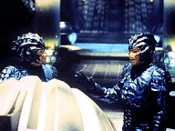
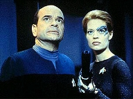
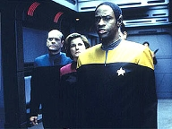
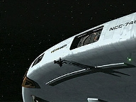
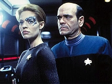
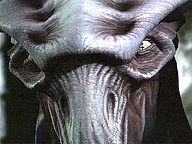
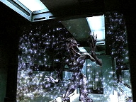

| MANCHETE
DO EPISÓDIO
Espécie
8472 vira caça dos Hirogen
Episódio
anterior | Próximo episódio Sinopse:
Data Estelar: 51652.3  Quando
a Voyager encontra uma nave Hirogen à deriva, Janeway envia um grupo avançado
para investigar o que houve e pesquisar mais sobre a espécie. Os oficiais acham
um sobrevivente, que é transportado para a Enfermaria. Restos de esqueletos e
órgãos descobertos na nave revelam que os Hirogen são uma raça que baseia
sua existência inteira na busca por presas a serem caçadas. Na entanto, em
irônica reviravolta, agora são eles o alvo.
O sobrevivente insiste em ser devolvido à sua nave,
explicando que tinha acabado de capturar um alienígena, quando este se libertou
e o atacou. Aparentemente ávido por continuar a caçada, o Hirogen é impedido
pela capitã, que, visando selar a paz com sua raça, oferece-lhe
tratamento médico. Em seguida, Tuvok reporta que houve um dano estrutural
inexplicável no casco da Voyager. Quando vai investigar com Harry, encontra uma
amostra de sangue alienígena nas proximidades da ruptura. Ao analisá-lo,
constata que um ser da Espécie 8472 está a bordo.
 Todos ficam alarmados. Janeway lança o alerta de intruso,
mas, antes mesmo que seja encontrado, ele passa pela Engenharia e ataca B'Elanna.
Em paralelo, os sensores detectam uma frota de naves Hirogen se aproximando.
Provavelmente, o sobrevivente enviara um pedido de socorro antes da chegada da
tripulação. O Hirogen na Enfermaria ameaça Janeway, dizendo que se não lhe
for permitido continuar a caçada, ele avisará àquelas naves para chegar
atirando na Voyager.
Janeway deixa o visitante participar das equipes de
segurança. Com base nos encontros anteriores com a Espécie 8472, os oficiais
sabem que a raça é suscetível a nanossondas Borgs modificadas. Tuvok e Seven
of Nine carregam rifles de phaser com a tecnologia e partem em busca do intruso.
Eles logo o encurralam. Quando o Hirogen abre fogo, Tuvok o pára e manda de
volta aos confinamentos da Enfermaria.
Paris e Seven descobrem que o membro da Espécie 8472
invadiu a Voyager numa tentativa de criar uma singularidade e voltar para casa.
Através de contato telepático com Tuvok, o alienígena explica que sua nave
foi danificada durante os conflitos com os Borgs e deixada para trás quando os
outros seres da espécie retornaram para o espaço fluídico. Ficou preso no
Quadrante Delta, sozinho, perseguido por meses pelos caçadores Hirogen. Tudo o
que deseja é encerrar o conflito e se reunir com os seus.
 Apesar de o visitante Hirogen ameaçar a tripulação se o
alienígena não lhe for entregue, Janeway pede que Seven abra a singularidade.
A ex-Borg se recusa a ajudar por causa de suas más experiências com os 8472. A
capitã a confina na área de carga até que a missão seja completada e delega
a B'Elanna a tarefa de duplicar os protocolos do defletor.
As naves inimigas chegam e, à medida que atacam a Voyager,
os campos de contenção internos são desativados. O Hirogen escapa da
Enfermaria e segue na caçada. Janeway chama Seven, ordenando que compareça à
localização do 8472 com um suprimento de nanossondas. A criatura fica agitada
e ataca o Hirogen. Enquanto os dois se enfrentam, Seven manipula o sistema de
transporte e os envia para uma das naves. Os Hirogen imediatamente partem em
dobra alta, mas, por causa dos danos, a Voyager não pode segui-los. Como
conseqüência de suas ações contra os comandos da capitã, Seven tem alguns
privilégios revogados e as atividades restritas.
Comentários:
Neste terceiro segmento da trilogia Hirogen, fica claro
que os arcos criados em Voyager não se equiparam aos de A Nova
Geração e (muito menos) Deep Space Nine. Não é uma crítica, mas
fria constatação. É louvável a abertura dos produtores nesta quarta
temporada. Sentiram que não "dava mais para enganar o telespectador".
Em parte, porque Seven of Nine veio a bordo com tamanha complexidade que seria
impossível não acompanhar momento a momento seu desenvolvimento. Não mais
cabiam episódios isolados em si. Só que a esta altura já se sabe que falta
aos roteiristas de Voyager o mesmo comprometimento que os das séries
co-irmãs tinham. Na verdade, "Prey" só "continua" a
saga Hirogen pelo título do episódio e por focar aqueles alienígenas.
 Há quem argumente que a presença da Espécie 8472 e a
citação do conflito com os Borgs contribuam à continuidade. Ledo engano. Esse
aparente "ponto forte" do roteiro cai em descrédito quando se tem em
conta a probabilidade remotíssima de a Voyager encontrar a criatura do
espaço fluídico. Os roteiristas esqueceram (leia-se: optaram por
esquecer) que a tripulação já saltou mais de 10.000 anos-luz do território
Borg. Não apenas isso já reduziria as chances de um novo encontro, mas
percebe-se que convenientemente o alienígena traçou o mesmo curso que a
Voyager, em direção ao Quadrante Alfa.
Feita a constatação, vamos às apreciações do real
valor deste que, sem sombra de dúvida, é um dos melhores segmentos do quarto
ano. A história é muito bem costurada em si, forte e densa. As atuações são
brilhantes. O ator convidado foi escolhido a dedo: Tony
Todd, que em Deep Space Nine brilhou nos papéis de Jake Sisko, em "The
Visitor", e de Kurn, em "Sons of Mogh".
Aqui, os roteiristas não reservam a chave do mistério
para o final. Já abrem o episódio mostrando os Hirogen na caça ao
sobrevivente da Espécie 8472. Essa seqüência de abertura funciona, muito
embora seja difícil imaginar que suas armas - mais avançadas que as dos Borgs
- não possam com as dos caçadores. Na Voyager, Seven está mais insolente do
que nunca. Questiona as ordens de Janeway abertamente. Dá gosto de ver. E aí
é que está a trama central do segmento. Todo o resto está lá em função
disso.
 Quando
o 8472 caminha pelo casco e invade a nave -
em peça particularmente interessante de CGI -, o caos se instala a bordo. As
cenas de suspense só se equiparam às de "Scorpion". É
curioso, pois o suspense tem tudo a ver com a ficção-científica, ainda mais
em se tratando do "desconhecido e distante" Quadrante Delta. Mas Voyager
poucas vezes o explora. Aqui, felizmente, faz com êxito. O telespectador fica
na ponta da cadeira, preparando-se para um susto em potencial, com a criatura
escondida no deck escuro e sem gravidade. A direção de Allan Eastman, apoiada
pela trilha sonora, merece nota máxima. Os pequenos elementos de cena também
ajudam: os trajes espaciais, o padd flutuando no corredor, a apreensão
de Seven. Quiséramos que a série sempre nos deixasse assim.
Para Janeway, o dilema moral é
complicado. Sem dúvida, a tripulação não precisa dos Hirogen como
inimigos, mas a capitã não está disposta a sacrificar a vida do 8472 -
ainda mais depois de a criatura explicar a Tuvok seus motivos. Janeway se
identifica com a causa do intruso, que deseja apenas voltar para casa. Pode
ser que muitos tripulantes discordassem da decisão de protegê-lo, que soa
pouco tática. Mas são oficiais e, em respeito à estrutura hierárquica,
seguiriam (quase) toda ordem emanada da Ponte. Todos, menos Seven. Neste
momento, "Prey" mostra seu ponto alto: é excelente a cena em
que a capitã pede à ex-Borg para auxiliar na tarefa de abrir uma
singularidade. Seven - com suas razões e uma lógica impecável - recusa.
 As duas atrizes oferecem aos fãs suas
melhores performances. Mulgrew é simplesmente brilhante e Ryan, bom,
esperemos que não existam mais aqueles que a brindem apenas pelo visual
privilegiado. É uma delícia ver o conflito aumentando gradualmente entre
Janeway e Seven. Voyager arrisca um pouco mais e distancia-se dos
"finais felizes" e do senso comum. Provavelmente, a última vez que
a série provocou essa sensação no público foi em "Scorpion",
na cena em que a capitã se desentende com Chakotay.
O capitão não é mais "herói".
Janeway está muito mais humana e falhando em sua tentativa de trazer Seven
para a família, em seu papel de "mãe", e a frustração decorrente
desse fracasso fica aparente em tela. Desde que a liberou dos Borgs, a capitã
procura relevar as insolências e desrespeito aos protocolos. Só que chegou
um momento em que o limite deve ser estabelecido. O diálogo final, na área
de carga, completou com chave de ouro a história.
 Havia o receio geral de que, por fim, Seven
refletisse, reconhecesse que errou e seguisse nos passos de Janeway.
Felizmente, isso não aconteceu. A capitã a repreende por ter desobedecido
ordens diretas e, em conseqüência, sentenciado um ser consciente à morte. A
chamada lição e disciplina. Mas as tiradas se Seven são desconcertantes
até mesmo para Janeway. Seven a
acusa de a estar punindo, na verdade, porque não se modelou à sua figura,
contrariando expectativas. E Janeway não nega. Nem poderia, visto que impôs
essa individualidade à ex-Borg. Como se vê, há muito terreno a ser
explorado no relacionamento das duas. Por ora, ficamos com um excelente
episódio da quarta temporada - até agora, a mais rica da série.
Citações:
Seven - "The Hirogen vessel is a
potential threat. We should destroy it."
("A nave Hirogen é uma ameaça em potencial. Devemos destruí-la.")
Janeway - "Seven, what you call a threat I call an opportunity to gain
knowledge about this species, and in this case, maybe even show some
compassion."
("Seven, o que chama de ameaça eu chamo de uma oportunidade de ganhar
conhecimento sobre a espécie e, neste caso, talvez até mostrar um pouco de
compaixão.") Janeway - "So
there's one question remaining. Who's hunting the hunters?"
("Então resta uma pergunta. Quem está caçando os caçadores?") Chakotay - "Is
your body armour designed to handle rapid pressure fluctuations?"
("Sua armadura foi projetada para lidar com flutuações rápidas de
pressão?")
Hirogen - "It can defeat most hostile environments. I once tracked a
silicon-based lifeform through the neutronium mantle of a collapsed star."
("Ela pode derrotar os ambientes mais hostis. Uma vez segui uma forma de
vida baseada em silício pelo manto de neutrônio de uma estrela em colapso.")
Paris - "I once tracked a mouse through Jefferies tube 32."
("Uma vez eu segui um rato pelo tubo Jefferies 32.") Hirogen
- "Surrender the creature to me and you will not be harmed."
("Entregue a criatura a mim e sua tripulação não sofrerá nada.")
Janeway - "This isn't a hunt. It's a slaughter, and I'm calling it off
right now."
("Isso não é uma caçada. É um massacre e estou pondo um fim nele agora
mesmo.")
Hirogen - "We will not be denied our prey. Give us the creature or
your crew will take its place."
("Não nos negarão a nossa presa. Entregue a criatura, ou sua tripulação
tomará o seu lugar.") Seven - "I
have agreed to remain on Voyager. I have agreed to function as a member of
your crew. But I will not be a willing participant in my own destruction or
the destruction of this ship."
("Eu concordei em permanecer na Voyager. Concordei em funcionar como membro
da sua tripulação. Mas não serei um participante voluntário na minha
destruição, ou na destruição desta nave.")
Janeway - "Objection noted. We'll do this without you."
("Objeção anotada. Faremos isso sem você.")
Seven - "You will fail."
("Vocês vão falhar.")
Janeway - "And you have just crossed the line."
("E você acaba de ultrapassar os limites.") Seven - "You
made me into an individual. You encouraged me to stop thinking like a member
of the Collective, to cultivate my independence and my humanity. But when I
try to assert that independence I am punished."
("Você me tornou um indivíduo. Encorajou que eu cultivasse a minha
independência e minha humanidade. Mas quando tento afirmar essa
independência, sou punida.")
Janeway - "Individuality has its limits. Especially on a starship
where there's a command structure."
("Individualidade tem limites. Especialmente numa nave estelar onde há uma
estrutura de comando.") Trivia:
 Quando foge da Enfermaria e quando encontra o membro da Espécie 8472, o Hirogen
está segurando um rifle de phaser. Mas quando o alienígena o ataca, ele está
com sua arma original.
Quando foge da Enfermaria e quando encontra o membro da Espécie 8472, o Hirogen
está segurando um rifle de phaser. Mas quando o alienígena o ataca, ele está
com sua arma original.
Tony Todd interpretou Kurn em "Redemption, Parts II & II" (A
Nova Geração) e "Sons of Mogh" (Deep Space Nine).
Também fez o Jake adulto em "The Visitor", de Deep Space
Nine. Em Jornada, participou ainda do jogo "Star Trek - Elite
Force II".
Clint Carmichael fez um Nausicaan em "Tapestry",
de A Nova Geração. Participou do jogo "Star
Trek - Elite Force II", também como um Nausicaan.
Ficha
técnica: Direção de
Allan Eastman
Adaptação por Brannon Braga
Exibido em 18/02/1998
Produção: 084 Elenco: Kate
Mulgrew como Kathryn Janeway
Robert Beltran como
Chakotay
Roxann Biggs-Dawson como B'Elanna Torres
Robert
Duncan McNeill como Tom Paris
Ethan Phillips como
Neelix
Robert Picardo como Doutor
Tim Russ
como Tuvok
Jeri Ryan como Seven of Nine
Garrett Wang como Harry Kim Elenco
convidado:
Tony Todd como Hirogen Alfa
Clint Carmichael como caçador Hirogen
Episódio
anterior | Próximo episódio
|